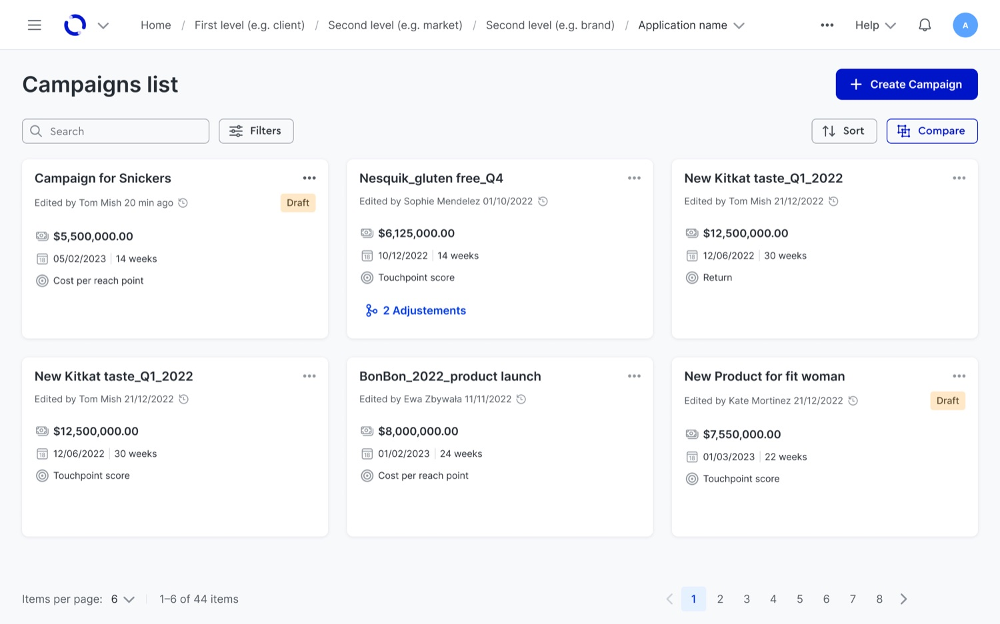
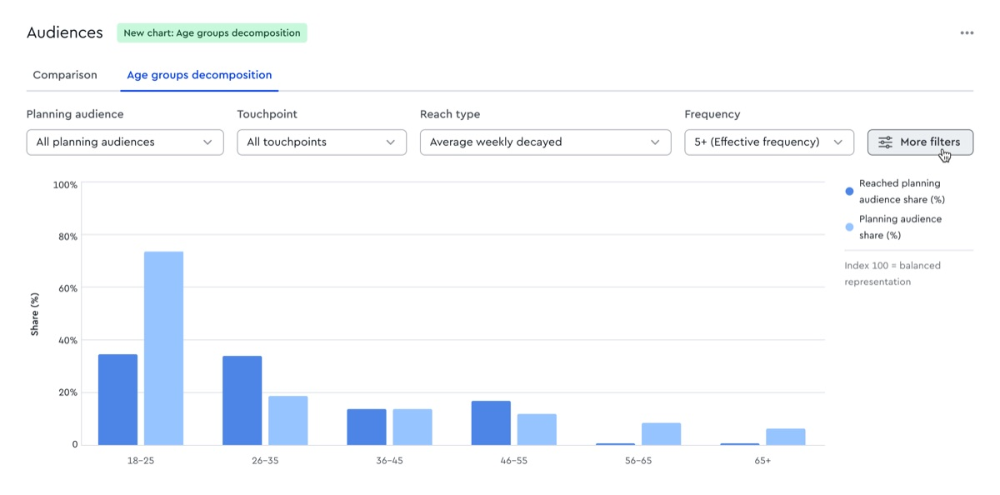
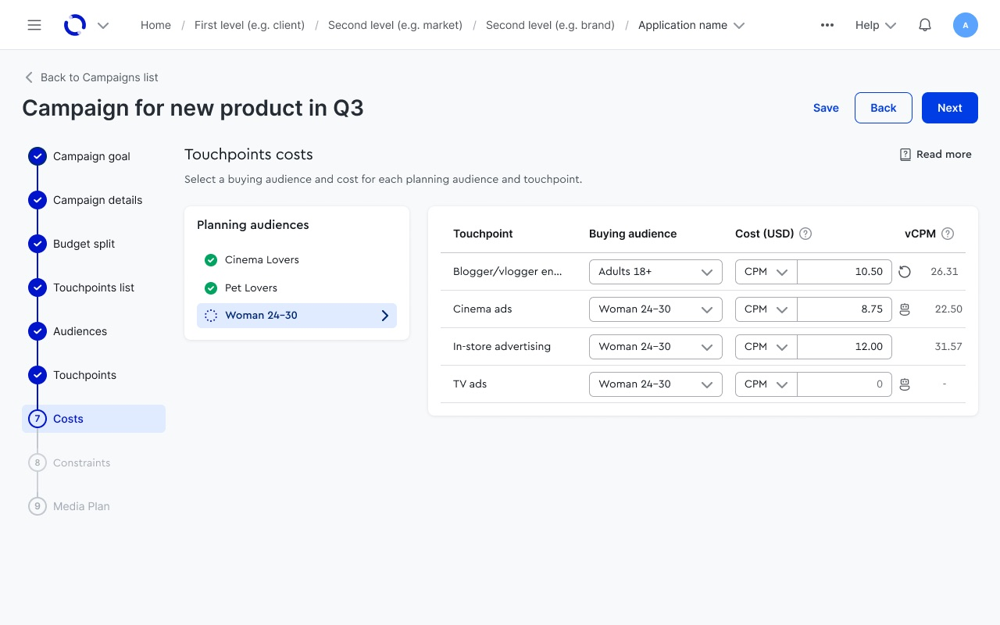
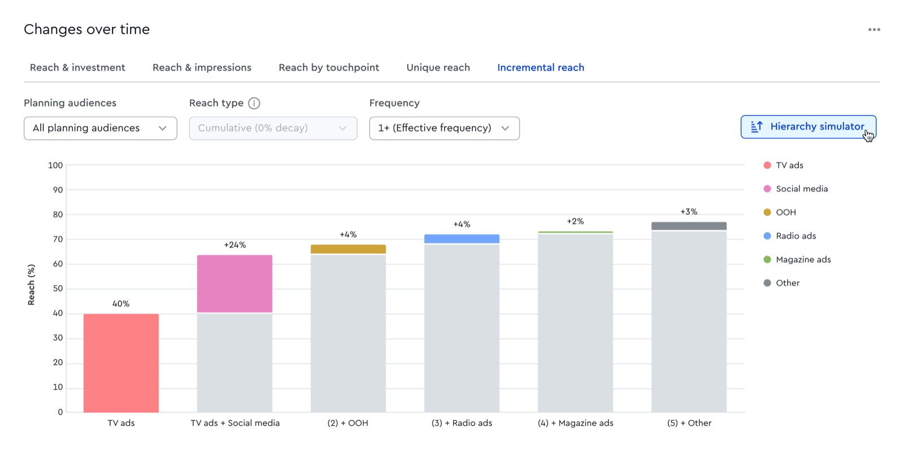
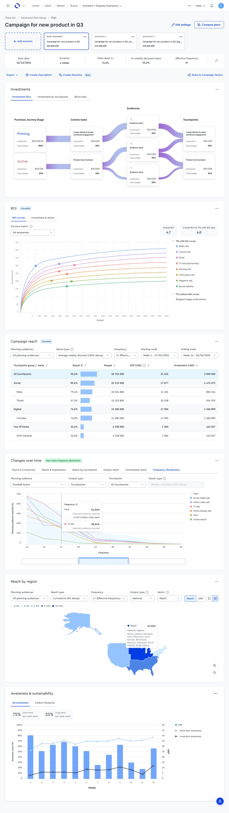
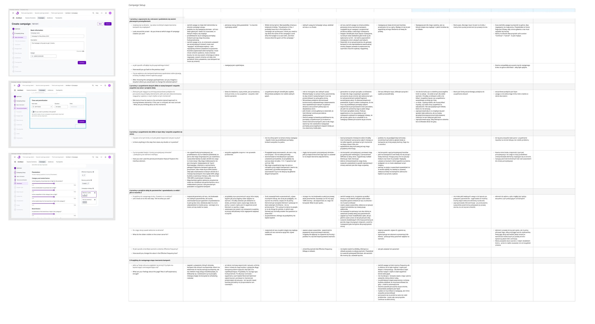

WPP Media · Redesign lead · 2023–2025
Rebuilding Campaign Planning
One agency’s internal tool became the company’s platform — and 2× faster to use.
I led the redesign of the app media planners use to build campaigns — the research, the data analysis, the wireframe studies and the design of the final flow. My team was the first trusted to pilot WPP’s new company-wide design system, so the rebuild had to prove that system could carry a real, complex product. This page is the process and the decisions, not a feature tour.




What I owned
A module this size is not a solo job — here is the part that was mine, and where the team came in.
I led the redesign end to end — research, sketches, the data analysis, and the studies I ran with planners on wireframes. Every call had evidence behind it before a pixel was committed.
Backend usage, earlier research, the complaints support heard most often, and a full audit of the flow run with engineering. That set the priorities — not taste.
The reorganised setup flow, and on the results screen the navigation and how planners add and compare scenarios — the top of the screen.
With the design team we agreed the grid and the rules for visualising data, then worked up the proposals together. I stayed lead on the redesign throughout.
faster to set up a campaign, end to end
team trusted to pilot WPP’s new company-wide design system
success metrics met — one close, one missed for a reason (below)
One media agency’s internal tool. WPP wanted it to be the campaign-planning platform for the whole company — and picked our team to go first, ahead of everyone, on a brand-new design system.
The brief could have been a component swap. I set the bar higher: fix the real pain points, simplify the flow, make it fast, and add smart defaults wherever the data justified them.
The redesign
From the evidence to the final screens.
Once I had been through every source we had — usage data, earlier interviews, the tickets support kept getting — and had tested the reorganised flow with planners on higher-fidelity wireframes, I moved on to designing the final views. Drag each slider.
Navigation
A dense, multi-level tab bar became one guided path.
Setup used to sprawl across nested tabs you had to hold in your head. Now it’s a single left-hand stepper, in the order a planner actually works.


Goal setting
The campaign goal moved to the front.
It used to be buried inside a technical “Optimizers” step. Now it’s the first thing you choose — in plain language, before any numbers.


Touchpoints
Touchpoint setup, untangled.
Related settings that were scattered got merged into one screen, with the option people reached for most given its own step in the right place.


A complicated, multi-element navigation became one simplified path — cutting cognitive load and making the whole setup flow 2× faster, through merged settings, smart defaults, and a backend rebuilt to load only what’s needed.
A year later · the results screen
Then we rebuilt what comes out the other end.
The setup redesign shipped first. A year on we started on the media plan itself — the screen a planner actually takes to a client.
One long plan, read top to bottom.
Investments, ROI curves, reach by touchpoint and by region, frequency distribution, awareness over time — a dense screen that still has to be readable when it goes in front of a client.
A screen this size isn’t a solo job. With the design team we agreed the grid and the rules for visualising data; I was directly responsible for the navigation and for how planners add and compare scenarios — the top of the screen.

How I worked
Not instinct — a paper trail.
Data before opinions, an audit with engineering, validation with planners, and a success bar agreed before we called it done.
Data first
Reading the app before redrawing it.
Before touching a screen I went through what we already knew: backend usage (where people stall and drop off), earlier research, and the complaints support heard most often. Three sources that rarely agree — and where they did agree, that became the priority list.

The audit
Every step on the wall, with engineering in the room.
I mapped the whole flow end to end and walked it with engineering, so we could separate what had to change from what was expensive and could wait. That is also where the smart defaults came from — we only defaulted what the data actually justified.

Validation
Tested on wireframes, before it was expensive to be wrong.
I ran the interviews and prototype sessions myself, on wireframes rather than finished screens — cheap enough to throw away, concrete enough for a planner to react to. What came back changed the order of the steps, not just the labels.



The scorecard, unspun
The team’s first proper success-metrics framework. Here it is in full — including the one we missed and why.
Speed up campaign creation
Session length from “Create campaign” to “Calculate media plan” — target ≤ 6 min for a typical campaign
✓ MetRaise satisfaction
Fewer feature-only support tickets; positive feedback across channels
✓ MetRaise satisfaction — rated
In-app 0–10 rating after the first month of open beta — target above 7.5
≈ Close — scored 7Raise retention
80% of new users return within 3 months
— Not metiRetention turned out to be seasonal — heaviest at the start, middle, and end of the year — something a redesign alone was never going to move. I show the number; I don’t dress it up.What changed for the business
A re-sequenced flow, data-informed defaults, and a backend that loads only what’s needed — together, not any one fix.
The option people reached for most right after recalculating got its own step, in the right spot in the flow.
Options less-experienced planners never touched moved to a side panel or were marked optional — progressive disclosure, not everything on by default.
As the company rolled out its new design system, our rebuild was the implementation teams looked to — the payoff for going first.